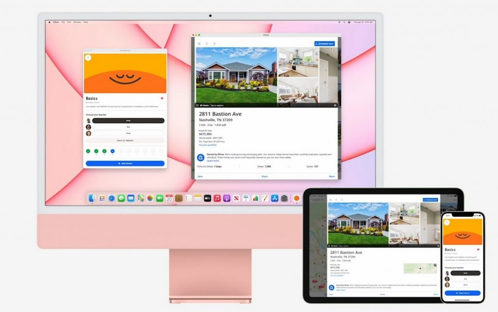
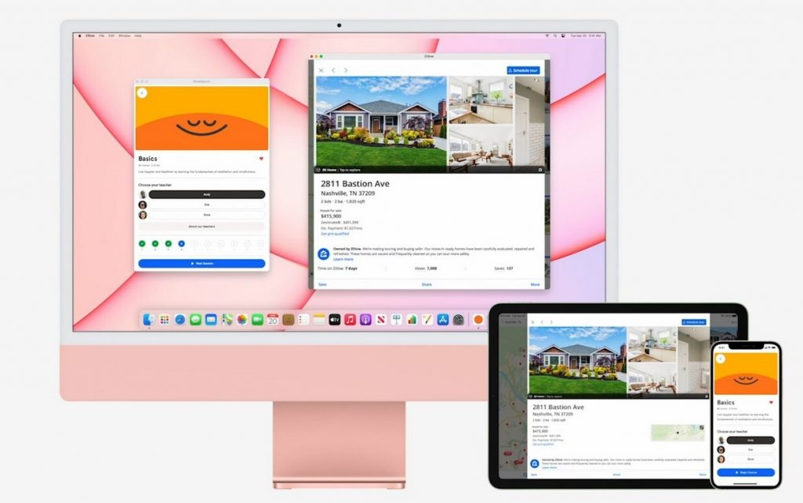

Carácter perfeccionista
Jobs llegaba a ser incluso mal visto por sus trabajadores por su afán perfeccionista, como los diseños de placas en los dispositivos Apple bajo el concepto de "artistas", la capacidad del Macintosh para decir "hola", o incluso el cambio brusco del ambiente de trabajo, apagando las luces de emergencia.
Leer más
Insistencia en el diseño de la Mac
Steve Jobs forzó a sus desarrolladores a crear versiones, una tras otra con el fin de consumar cambios pequeños, al punto de llegar en conflictos frente a su personal de trabajo. Se cuenta incluso sobre las quejas de los mismos por dicha insistencia, y Jobs reafirmaba el perfeccionismo en los detalles.
Leer más
Dejó de asistir a clases oblgatorias
A pesar de ello, continuaba asistiendo a clases universitarias que eran de su interés en Reed College, muchas veces de forma escabullida. A Jobs no le gustaba la estructura académica pero sí tenía muchas ganas de aprender. Recordado también por un magistral discurso en la universidad de Stanford
Leer más
 
